12-card collectible set • Standard poker size • Stats, abilities & real science facts
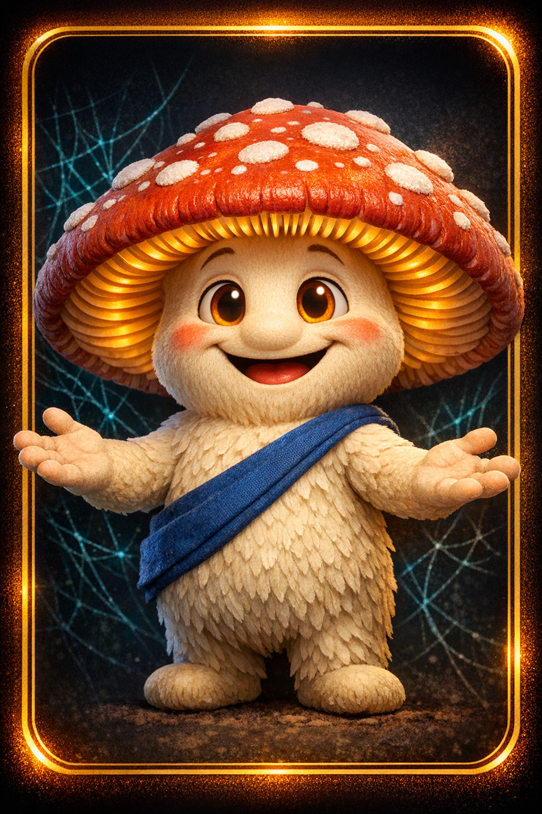
Can sense the health of every connection in the Sillium simultaneously and redirect resources where they're needed most.
The iconic red-and-white spotted mushroom is one of the most recognizable fungi on Earth. In real forests, amanita species form mycorrhizal partnerships with birch and pine trees, trading minerals for sugar.
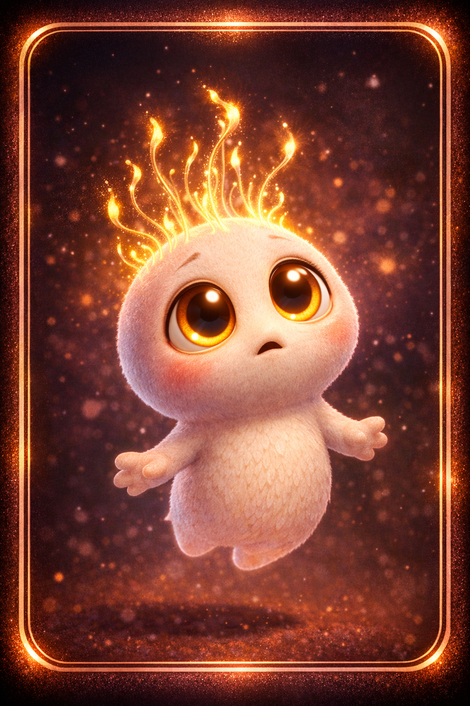
When Spora connects for the first time, her pure signal resonates through the entire network — amplifying everyone else's power temporarily.
A single mushroom can release BILLIONS of spores. Each spore is a potential new organism — but only a tiny fraction find the right conditions to grow. Every giant fungal network started as one tiny spore.
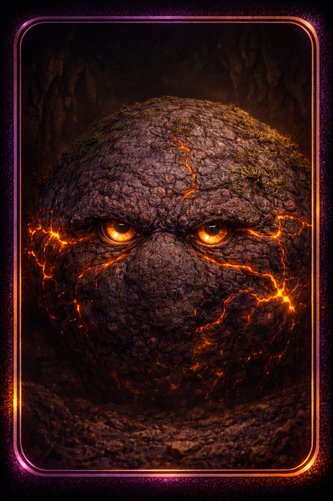
Can access any memory stored in the network throughout its entire history — centuries of forest knowledge available instantly.
Truffles grow entirely underground and can take 7–10 years to produce their first fruiting body. They form some of the oldest and deepest mycorrhizal connections. Some truffle networks are hundreds of years old.
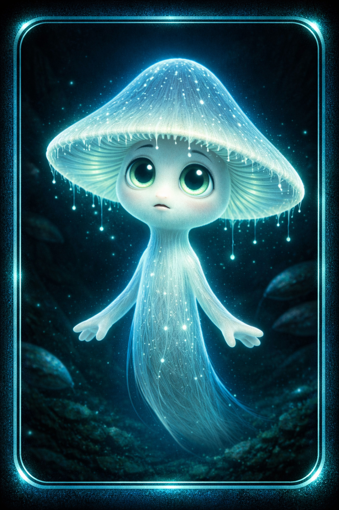
The more afraid Lumos is, the brighter he glows — illuminating dangers and reactivating dormant network threads in his wake.
Over 80 species of fungi are bioluminescent! Scientists believe the glow attracts insects that help spread spores. The brightest can be seen from 50 feet away in total darkness.
Explosive spore release that broadcasts messages across the entire network simultaneously — the fastest signal in Sillium.
A single giant puffball can release up to 7 TRILLION spores in one burst! If every spore grew, they would weigh more than the entire Earth. Giant puffballs can grow to the size of a beach ball.
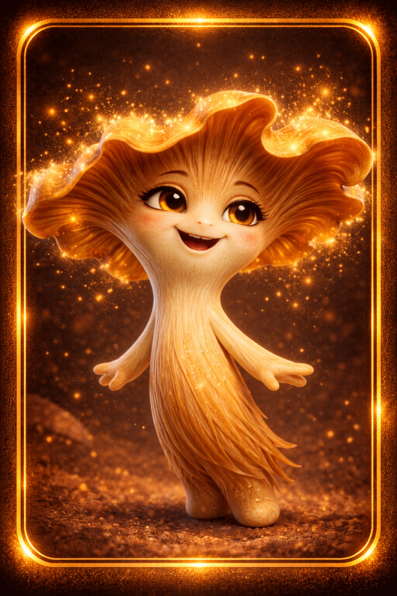
Golden particles from Chanty's cap can replay network memories as visible, hovering images — making the invisible past visible.
Chanterelles grow in family groups and form long-term partnerships with specific trees — the same patch can produce mushrooms for decades. Their golden color comes from carotenoid pigments, similar to carrots!
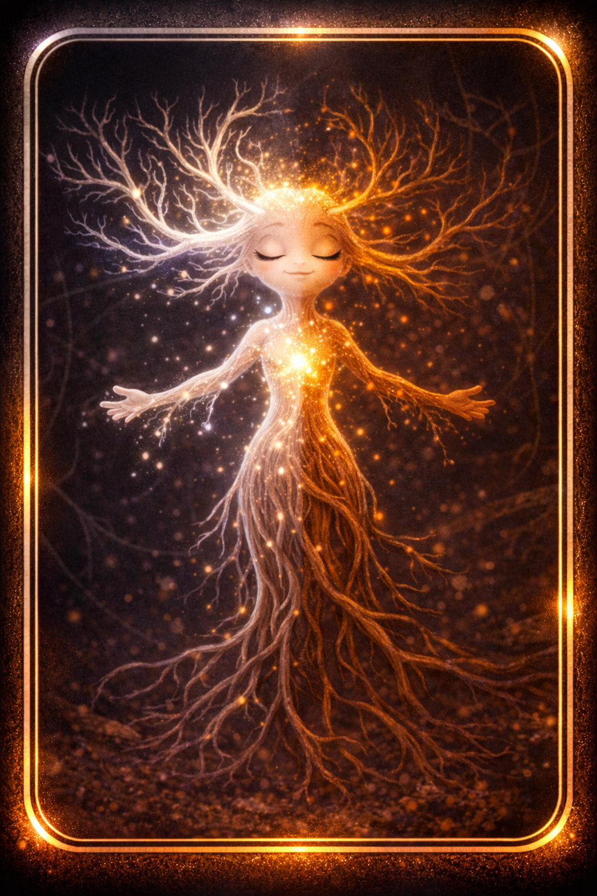
Can establish or restore the connection between ANY tree and ANY fungus — the essential translator without whom the network falls silent.
Mycorrhizae (my-cor-RY-zee) are the physical connection points between fungi and tree roots. The fungus wraps around and sometimes enters root cells. About 90% of all plants depend on mycorrhizal partnerships.
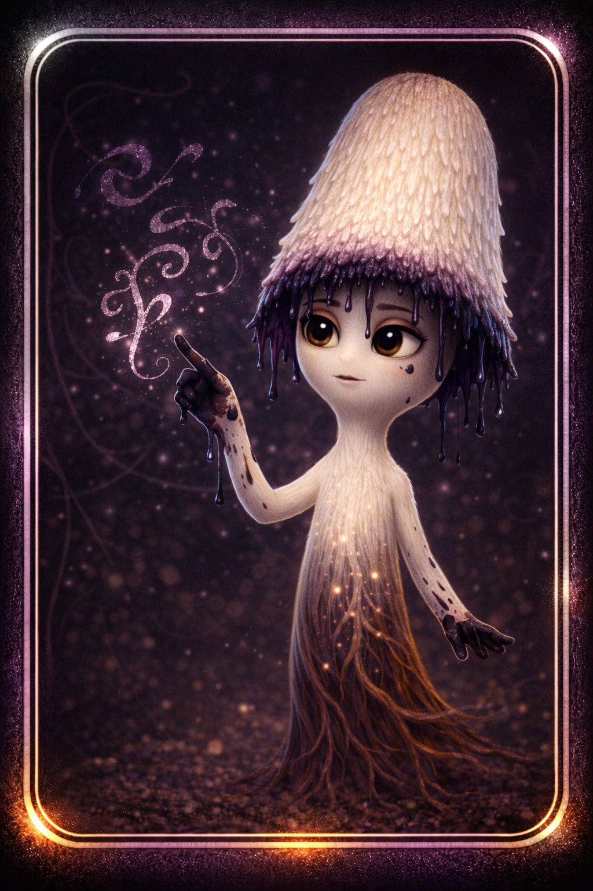
Records network events permanently on cavern walls using her own dissolving cap as ink — each record costs her, making every entry a gift.
Shaggy ink caps undergo "autodigestion" — they dissolve their own caps into black ink to help disperse spores. This real ink was historically used for writing. Creation through transformation.
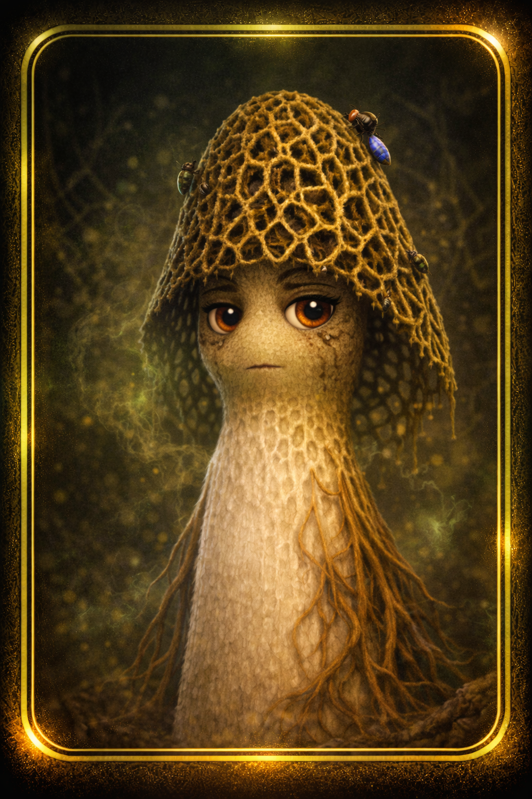
His scent attracts insects from across the forest — creating an above-ground messaging network that complements the underground one.
Stinkhorn fungi attract flies and beetles with their smell. The insects eat the spore-containing slime and carry spores to new locations. The smell is a brilliant dispersal strategy!
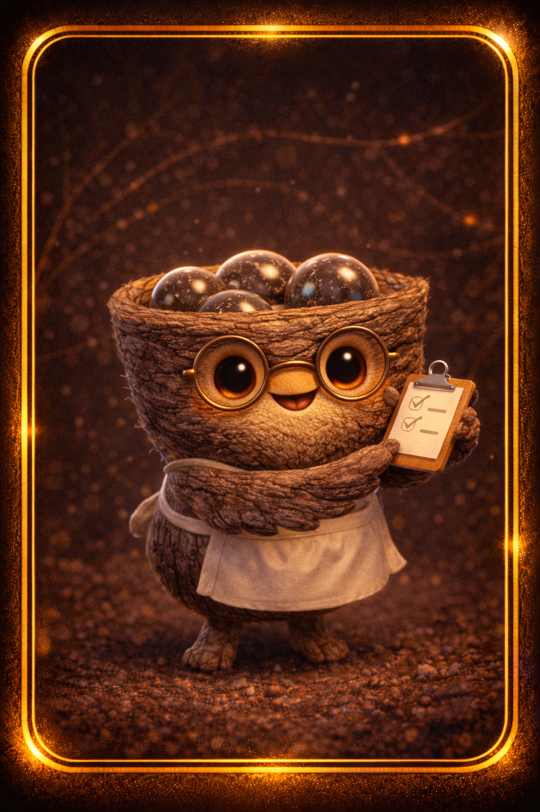
Can launch spore-packets to exact network nodes with pinpoint accuracy — the Sillium's long-range delivery system. Never misses.
Bird's nest fungi launch their "eggs" (peridioles) using falling raindrops. A single raindrop can launch a spore packet up to 1 meter away — over 100 times the fungus's own height!
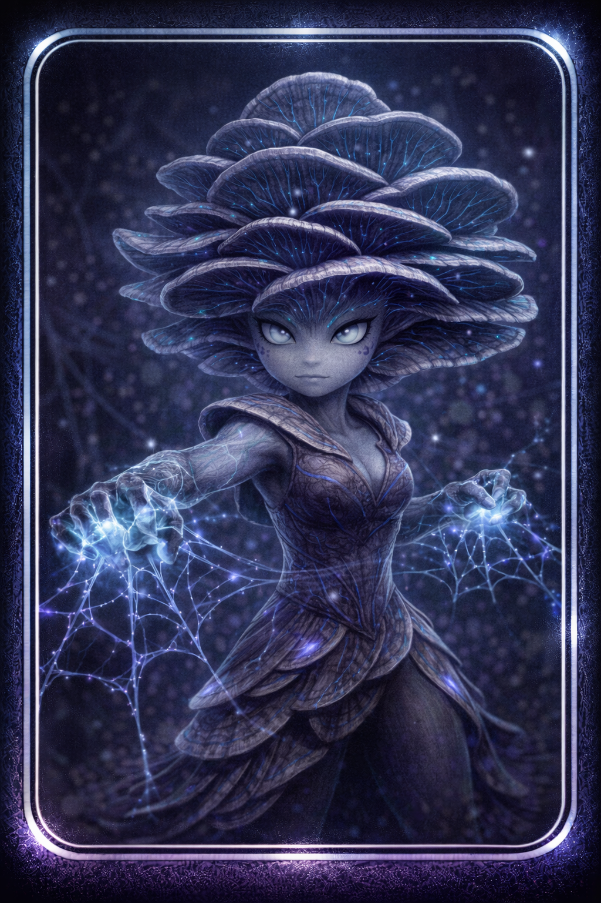
Web-like threads detect and neutralize parasitic threats before they reach the network — the Sillium's immune system.
Oyster mushrooms are real predators! They produce lasso-like loops that capture nematodes in less than a second. They're the only "carnivorous" mushroom most people eat!
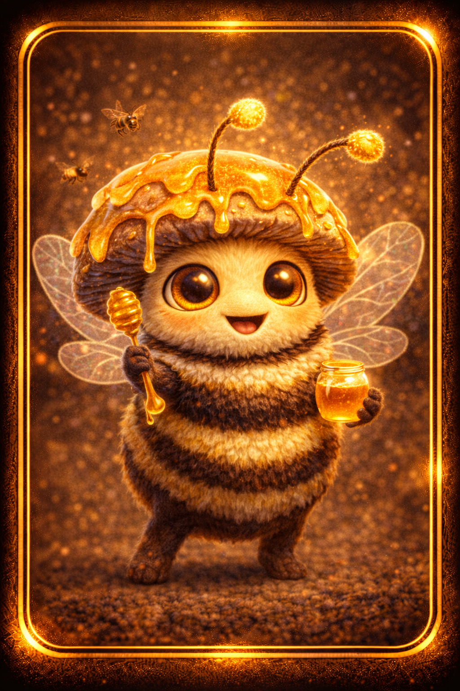
Links the above-ground world to the underground network — carries pollen, signals, and news between the two realms.
Honeybees are essential pollinators — one-third of our food depends on them. A single bee visits up to 5,000 flowers daily. They communicate through "waggle dances" — the sky's version of the fungal network!
| Card Size | 2.5" x 3.5" (standard poker) |
| Cardstock | 300gsm coated, blue core |
| Finish | Matte front, glossy highlights on art |
| Packaging | Foil booster pack (4) or complete set box (12) |